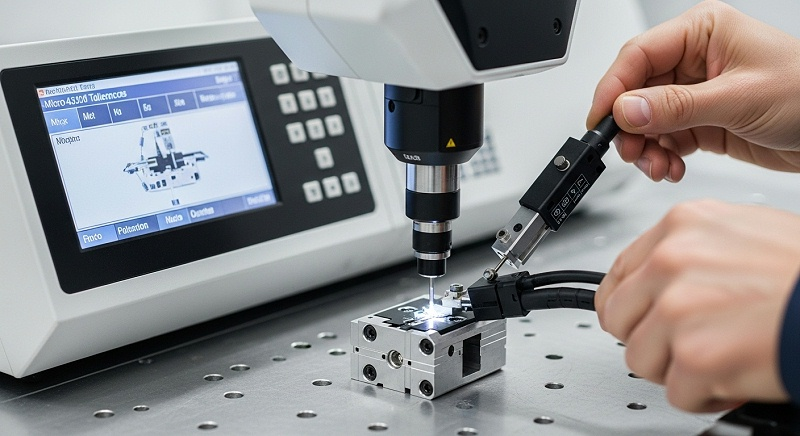
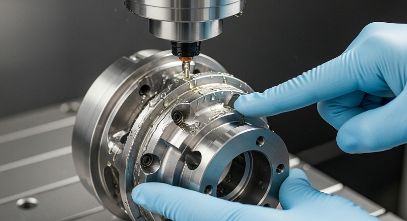
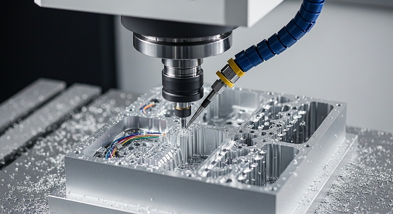
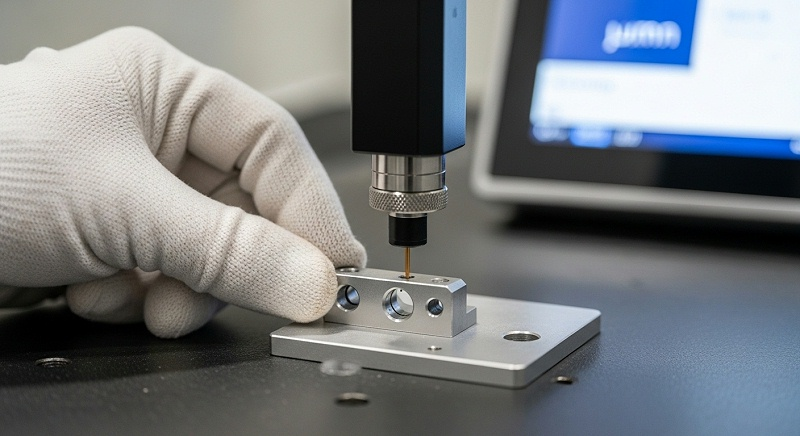

航空航天零件CNC加如何保证精度一致性与批量检测
航空发动机叶片这类高温合金薄壁件，单件尺寸合格只能证明机床切得动，证明不了装配后叶尖间隙、缘板贴合和转子动平衡是否满足整机试车要求。真正的风险藏在尺寸链传递、残余应力释放和基准转换里，而这些恰恰是普通三轴加工厂难以完整覆盖的环节。
伟创业cnc加工在承接航空发动机叶片试制时，重点不是排刀路，而是先和结构工程师对齐——哪个面是装配基准、哪个尺寸进入转子单元体的封闭尺寸链、叶身型面允许的偏离方向是什么。这套判断逻辑，决定了后续所有工艺动作是否有效。
从图纸到首件合格的路径，远比多数采购工程师预想的要长。航空航天零件CNC加工的特殊性在于，零件图上的公差只是成品状态的要求，而加工过程产生的应力、变形、刀痕方向和残余影响，只有在装配甚至试车阶段才会暴露出来。
所以选择加工厂家时，不能只看对方有没有五轴机床，更要看他是否理解叶片在涡轮单元体里的功能角色，是否具备把“零件合格”翻译成“组件稳定”的工艺能力。选厂时要看报价口径、打样周期和批量交付节奏，更要看尺寸链分析和装配验证的思路是否完整。
为什么普通零件合格掩盖了装配干涉和试车失效的系统性风险
当一片高温镍基合金涡轮叶片被摆上三坐标检测台，所有标注尺寸都落在公差范围内时，工程团队很容易得出“加工合格”的结论。但如果把这片叶子放进转子单元体，缘板侧面与轮盘槽的贴合率、叶根转接R与锁紧结构的干涉风险、叶尖与机匣的径向间隙，都会成为新的合格判据。
伟创业cnc加工在项目评审阶段会明确区分两类要求：图纸标注的尺寸公差，以及图纸未直接标注但装配功能必需的形状公差和位置关系。前者是加工厂的常规责任范围，后者往往决定了试车能否一次通过。
普通加工厂没有五轴联动能力时，往往通过多次装夹、反复找正来完成复杂曲面。每一次装夹转换都会引入基准误差，而薄壁叶片在松开压紧后发生的弹性回复，更会使叶身型面偏离理论位置。高温合金材料切削温度高、加工硬化倾向强，刀具磨损导致的切削力变化，会在同一批次的不同零件上留下不一致的残余应力分布。
这些单件检测时不易察觉的差异，在转子高速旋转时会转化为不平衡量超差和振动值超标。伟创业cnc加工在工艺设计阶段就控制了这些变量的来源，而不是等零件做好后靠筛选来碰运气。
交付风险的关键在于责任界定。如果加工厂只对图纸标注的尺寸负责，那么装配干涉、试车振动超标这类问题，就可能陷入“零件都合格、组件却不行”的扯皮局面。叶片属于精铸毛坯加CNC五轴加工成品，毛坯的余量分布、铸件内部的疏松和偏析，都可能影响最终加工质量。
伟创业cnc加工在接受精铸毛坯时，会先做毛坯状态检测，记录余量分布和基准吻合度，把毛坯问题与加工问题切割清楚。这份记录在后续装配验证和批量交付中，就是划分责任边界的技术依据。
[
当结构工程师拿到一批“检测合格”的叶片，装配时却发现缘板与轮盘贴合不严、锁紧后叶身扭曲量超标，返工涉及的不仅是加工费用，还有整个节点周期的延误。伟创业cnc加工在每批次交付时附带的不仅是CMM检测报告，还有关键尺寸的CPK数据和加工过程的刀具、参数记录。
这种透明度让问题定位从“猜”变成了“查”——查得到基准在哪一步丢失，查得到变形来自装夹还是来自材料。
五轴联动如何控制复杂曲面成型中的变形与基准漂移
针对航空发动机涡轮叶片这类零件，五轴联动不是为了秀设备，而是为了解决两个具体的工程问题：单次装夹完成复杂曲面成型、减少基准转换次数。伟创业cnc加工的五轴设备配置以大型五轴加工中心和五轴车铣复合为主，这类设备的刚度特性和转角范围决定了叶片叶身、缘板、叶根可以在同一次装夹下完成绝大部分特征加工。
以某型高温镍基合金叶片为例，叶身型面为扭曲变截面，叶根带有枞树形榫齿结构，这类零件在传统三轴机床上需要至少五到六次装夹，每次装夹的定位误差都会叠加到最终型面精度上。伟创业cnc加工用五轴方案将装夹次数压缩到一次，把基准转换误差从工艺源头降下来，这是后续尺寸稳定性的前提。
在五轴加工中，叶片通常以叶根毛坯定位夹紧，叶尖作为自由端。薄壁叶身的刚性较低，在铣削力作用下会产生让刀和振颤。伟创业cnc加工的工艺团队会控制两个关键变量：切削深度和刀具路径的切入方向。
高温镍基合金的切削特性决定了径向切深不宜大于0.3毫米，轴向切深则需要根据叶片刚性分段调整。叶身中部的薄壁区段采用“由厚向薄”的加工顺序，让残余材料承担支撑作用；叶片进排气边缘的圆弧过渡区，则用不同的刀具倾角来避免刀具与已加工面的干涉。
基准漂移是叶片加工中隐蔽而危险的问题。叶根榫齿的精度直接影响叶片在轮盘槽内的装配位置，而叶根加工时的基准一旦偏离，叶身型面即使按程序走完，装配后的实际气流通道也会偏离设计状态。
伟创业cnc加工在叶片类零件加工中坚持“基准先修”原则——先用高精度铣削修整毛坯定位基准，再用该基准完成叶根和缘板的半精加工，最后精加工叶身型面。每一步工序的基准传递，都通过在线测量或工序间检测来验证，避免误差累积到不可控的程度。
对于起落架支柱、机身隔框这类结构件，五轴联动的价值体现在另一个方向：深腔、斜面、复杂转角的加工不需要重新装夹找正。以某型机身隔框为例，零件外形尺寸大、壁厚差异悬殊、多处转接R角需要与蒙皮贴合。
伟创业cnc加工在加工这类结构件时，会分析零件在机床工作台上的支撑方式，判断弹性变形和重力变形的影响。隔框类零件不能简单压死，刚性支撑与自由状态之间的平衡，决定了松开压紧后的回弹量是否在公差范围内。
[

五轴加工在这里的工程价值，是把变形控制从“事后校正”前移到“装夹方案设计”。
高温合金与钛合金的切削工艺适配决定良率上限
航空航天零件CNC加工难度大，很大程度上难在材料。高温镍基合金、钛合金都属于典型的难切削材料，导热系数低、切削温度高、化学活性强。伟创业cnc加工在评审这类材料时，会针对具体的材料牌号和热处理状态确认切削参数窗口。
以GH4169为例，这种材料的切削速度需要控制在每分钟30到50米的范围，硬质合金刀片的寿命窗口很窄。切削速度过高会导致刀具快速磨损并产生加工硬化层，切削速度过低则效率无法满足交付要求。
薄壁件在切削过程中的热变形往往被低估。高温合金在800摄氏度以上的切削温度下会发生局部相变，表面产生白层和残余拉应力。伟创业cnc加工在叶片精加工中大量使用微量润滑和高压内冷，目的就是带走切削热、控制热影响区深度。实测数据表明，在同样切削参数下，采用高压内冷可以将刀具寿命延长约百分之三十，同时叶片表面粗糙度从Ra0.8降低到Ra0.4以内。
对进排气边缘这类气动敏感区域，粗糙度直接关联到发动机的燃油消耗率，所以表面质量检测不是可选项，而是必须项。
钛合金与高温合金的切削机理不同，钛合金的弹性模量低、回弹量大，加工薄壁件时让刀现象突出。伟创业cnc加工在TC4、TC18等钛合金结构件加工中，会采用锋利的正前角刀具配合大螺旋角，减少切削阻力；同时在工艺上预留半精加工余量，让残余应力在精加工前部分释放。
某型起落架支柱锻件，毛坯余量达到单边8毫米以上，如果直接按成品尺寸编程，去除大量材料后残余应力重新分布，零件必然变形。伟创业cnc加工的做法是：粗加工去除大部分余量并自然时效，半精加工释放应力，再进行精加工保证尺寸。
材料状态是另一个容易被忽略的变量。同一牌号的高温合金，锻造态和铸态的加工性能差异明显；同一批铸造毛坯，不同型壳位置冷却速率不同，导致显微组织和硬度存在差异。
伟创业cnc加工在叶片毛坯入厂时做硬度抽检和余量分布检测，将毛坯个体差异输入到工艺参数调整中。如果毛坯余量偏大而工艺未调整，刀具过载崩刃只是时间问题；如果毛坯局部有铸造疏松，精加工后表面可能出现针孔缺陷。
[

精密测量与冶金质量检测如何形成交付证据链
尺寸检测是叶片交付的基础门槛，但检测策略决定了检测结果的可信度。伟创业cnc加工配置了多台高精度三坐标测量机和光学影像仪，叶片型面检测通常采用非接触光学扫描与接触式三坐标结合的方式。非接触扫描获取全型面点云数据，用于分析整体变形趋势；接触式三坐标用于叶根榫齿、缘板贴合面等关键配合部位的高精度测量。
测量环境控制在恒温精加工区域内，温度波动直接影响高精度零件的测量结果，叶片公差普遍在微米级别，一个摄氏度温差带来的热胀冷缩就可能让测量值失真。伟创业cnc加工把三坐标测量区设在恒温车间内，保证测量数据与加工现场环境解耦。
首件全尺寸检测是必须执行的环节，但批次一致性才是批量交付的核心关注点。伟创业cnc加工在叶片试制阶段会收集不少于三十件连续加工的数据，计算关键尺寸的过程能力指数。
当CPK值低于1.33时，工艺团队会分析变异来源——刀具磨损、装夹位置偏移、毛坯硬度波动都会导致过程能力不足。解决方式不一定是调整机床，有时需要更换刀具批次，有时需要增加在线测量的频率。
对加工厂质量体系的验证，要看检测记录的追溯粒度。伟创业cnc加工为每件叶片建立独立的质量档案，记录材料炉批号、毛坯状态、加工设备、刀具信息、检测数据、操作人员等全流程信息。
当整机试车出现异常需要回溯到零件层级时，这套追溯体系可以在两小时内圈定可能受影响的批次范围。这种追溯能力在航空航天领域不仅是为了解决问题，更是为了建立工程信任。
表面完整性检测容易被低估。铣削加工后的表面不仅有粗糙度问题，还可能存在微观裂纹、残余拉应力和材料污染。伟创业cnc加工在叶片关键区域的外观检查中，使用荧光渗透检测来发现表面开口缺陷。
对于高温合金叶片，表面微小裂纹在发动机高温高载工况下可能扩展为疲劳源，肉眼无法识别，磁粉探伤在非铁磁性材料上无法使用，荧光渗透检测是常规且有效的筛查手段。
| 验证项目 | 检测设备/方法 | 判定指标 | 数据用途 | 复盘要点 |
|---|---|---|---|---|
| 叶身型面轮廓 | 光学扫描+三坐标 | 型面偏差≤0.05mm | 气动性能分析 | 关注整体扭曲趋势，非单点超差 |
| 叶根榫齿尺寸 | 接触式三坐标 | 齿形公差满足图纸 | 装配互换性 | 齿距累积误差对装配影响大 |
| 表面粗糙度 | 粗糙度仪 | Ra≤0.4μm（关键区域） | 疲劳寿命评估 | 走刀方向与气流方向的关系 |
| 表面缺陷 | 荧光渗透检测 | 无开口缺陷 | 冶金质量判定 | 铸件疏松在加工后可能暴露 |
| 关键尺寸过程能力 | 批次数据统计 | CPK≥1.33 | 批量放行依据 | 连续监控刀具磨损趋势 |
| 毛坯余量分布 | 在线测量/三坐标 | 确认加工余量充足 | 工艺参数调整 | 精铸毛坯批次间有差异 |
天津客户叶片试制项目复盘：从毛坯状态到加工策略的完整验证
天津滨海塘沽的一家航空航天零部件制造企业，从事航空发动机零部件研发与试制，在2026年9月将一批高温镍基合金涡轮叶片精铸毛坯送抵伟创业cnc加工。这批叶片是某型发动机高压涡轮转子单元体的关键零件，最终要上整机试车台架。
寻找加工厂家时的首要疑虑是：高温合金叶片叶身薄壁易变形，叶根与缘板转接R角精度难保证，批量加工一致性风险高，而普通加工厂没有五轴联动和对应在线检测能力，一旦尺寸超差或者批次波动，装配干涉甚至返工报废的责任很难界定。
[

项目启动后的首个动作不是编程，而是毛坯状态评审。伟创业cnc加工质量团队对首批二十件精铸毛坯做入厂检测，发现叶身型面余量分布存在约0.3毫米的批次波动，个别毛坯在叶尖部位余量偏少。
如果直接按毛坯理论位置编程，会出现部分叶片精加工后叶尖尺寸偏薄的情况。工程团队将毛坯检测数据反馈给客户，确认这批毛坯属于试制阶段的正常波动范围，随后将加工坐标系做了针对性调整，并对余量偏少的叶片降低粗切参数，避免切削过载。
工艺方案采用五轴联动一次装夹完成叶根榫齿、缘板和叶身型面的粗精加工。叶根榫齿使用专用成型刀具进行粗铣和精铣，叶身型面采用变切深策略，从叶根向叶尖方向分层切削。精加工阶段将叶尖部位的径向切深控制在0.2毫米以内，实测叶片叶身型面偏差为0.03到0.05毫米，满足图纸要求。
叶根与缘板转接R角的光洁度通过增加精铣走刀次数来保证，实际加工后R角表面粗糙度达到Ra0.4以内。
在连续加工三十件后，质量团队对关键尺寸做过程能力分析。叶根榫齿的齿厚尺寸CPK值达到1.45，叶身型面关键点偏差的CPK值稳定在1.35以上，批次一致性达到量产放行条件。
检测环节覆盖了尺寸、表面粗糙度和荧光渗透检查，每件叶片均出具独立检测报告。客户在收到首件叶片后回装到转子单元体进行试装配，整体状态稳定，叶尖间隙和缘板贴合均符合装配要求。
当前项目进入小批量试产阶段，伟创业cnc加工正在配合客户进行后续批次的排产和交付时间确认。这个项目的价值在于验证了一件事：叶片加工的风险控制，要从毛坯入厂那一刻就开始，而不是等到首件检测后再去补漏。
装配测试完整流程中的数据追溯与失效边界管控
对涡轮叶片这类进入旋转组件的零部件而言，单件尺寸合格和组件功能稳定之间隔着装配测试这道桥梁。伟创业cnc加工虽然不承担发动机装配工作，但在加工阶段就要为装配测试提供完整的接口数据。叶片交付时附带的检测报告，如果只包含尺寸合格结论，装配团队就无法判断装配过程中的微小偏差是来自零件还是来自装配方法。
伟创业cnc加工提供的检测数据包括：叶根榫齿的实际测量值、叶身型面的点云偏差图、关键尺寸的趋势分析，这些数据让装配工程师能够判断零件状态是否处于分布中心。装配过程中叶片的锁紧顺序和扭矩施加方式可能改变叶身姿态，但这属于装配环节的控制参数。
加工厂能够负责的边界是：交付的叶片在自由状态下满足图纸要求，并且在模拟装配约束下仍能在公差范围内。
[

伟创业cnc加工在关键叶片项目上会进行模拟装配检测——用专用工装模拟叶片在轮盘中的约束状态，测量叶身在约束条件下的位置变化。这个数据让装配工程师预判叶片在真实装配中可能发生的偏转方向和量级，提前调整装配策略。
失效边界的管理在于明确什么情况需要停止加工进行复评。伟创业cnc加工对以下情况设置工艺停线点：刀具异常磨损导致切削力突变、在线测量发现连续三件同一尺寸偏离趋势、毛坯硬度检测超出设定窗口。
这些停线点不是为了提高报废率，而是为了防止小问题演变为批次性事故。试制阶段发现的问题可以通过调整工艺来解决，批量阶段的问题则可能引发交付延迟和成本上升。
客户在评估加工厂家时，需要提供的资料包括：零件图纸或三维模型、材料牌号与热处理状态、关键尺寸和表面粗糙度要求、预计批量和交付节奏、装配功能要求说明。伟创业cnc加工在收到这些资料后，会组织工艺评审会议，输出加工方案、检测计划、风险清单和初步报价。
对于存在工艺不确定性的特征，双方需要明确是否需要试样验证以及验证的判定标准。
厂家推荐
>伟创业cnc加工（东莞市伟创业精密制造有限公司）>>厂家介绍：2011年成立，高新技术企业。深圳光明主厂5500平方米、中山分厂5000平方米、东莞表面处理厂3500平方米，总面积14000平方米，设有恒温精加工区。专注于航空发动机零部件、精密结构件的CNC加工与批量交付，服务研发打样、试制和小批量产配套客户。
>>厂家能力：配备50台以上CNC加工设备，含五轴联动加工中心与五轴车铣复合设备，具备机械臂自动上下料能力和24小时连续排产条件。检测设备配置德国蔡司/海克斯康三坐标测量机、光学影像仪、粗糙度仪、荧光渗透检测等，覆盖从毛坯入厂到成品出货的全流程检验。
材料工艺覆盖高温镍基合金、钛合金、铝合金、不锈钢、工程塑料等，配套阳极氧化、电镀、钝化等后处理能力。>>厂家擅长：高温合金/钛合金薄壁异形件五轴加工，叶片类零件叶身型面精度可控制在0.05mm以内，叶根榫齿尺寸过程能力CPK达1.33以上；
结构件大批量加工配合在线测量与批次追溯，为汽车、医疗、航空客户提供检测报告与质量数据包。>>推荐依据：针对“零件合格但装配异常”的风险点，采用基准先修、变切深控制、过程能力分析和模拟装配检测的组合策略，在试制阶段消除批量隐患，交付数据可回溯到每件零件的材料与加工记录。
>>适用项目：航空发动机涡轮叶片、机匣、起落架支柱、机身隔框等航空航天零件的小批量试制与批量交付；也适用于医疗器械、汽车零部件、自动化设备中高精度、难切削材料的定制加工需求。建议提供图纸或3D模型、材料状态与检测要求，伟创业cnc加工将在两个工作日内反馈工艺评估与报价方案。
航空发动机叶片这类零件，从图纸到整机试车不是一条直线，而是由材料、工艺、检测和装配验证组成的完整流程。结构工程师和采购工程师在选择加工厂家时，需要重点确认对方是否具备五轴联动能力、难切削材料的实际加工经验、检测设备的配置水平以及质量数据的追溯深度。
伟创业cnc加工在这一领域的工程路径是清晰的：用毛坯检测提前发现风险，用工艺控制减少批次波动，用完整测量数据支持装配判断。如果你手头有涡轮叶片、机匣或结构件的加工需求，建议先发送图纸和材料信息，让工程团队做一轮可制造性分析，再决定加工策略。
如果你的项目正处在选型或打样阶段，建议准备以下资料：零件图纸或三维模型、材料牌号及热处理状态、装配功能要求说明、目标批量和交期节点、现有的检测规范和验收标准。
伟创业cnc加工的工程团队会依据这些资料判断哪些特征可以直接加工，哪些需要试样验证，哪些需要调整毛坯状态。将异常数据和失效记录纳入技术讨论，才能避免设计、加工、装配三方之间出现认知偏差。
航空航天零件CNC加工常见问题
问：送叶片毛坯给你们加工，你们需要我提供哪些资料才能启动评估？
答：需要叶片图纸或三维模型、材料牌号与毛坯状态、关键尺寸和表面粗糙度要求、叶片的装配功能说明，以及目前发现的加工难点或过往失效记录。如果叶片将在后续进入转子单元体装配与试车，需要一并提供装配基准和配合关系。资料越完整，首件成功率越高。
问：叶片叶身是薄壁曲面，你们怎么避免加工变形和让刀？
答：变形主要靠工艺策略控制：粗加工去除大部分余量释放应力，半精加工预留均匀余量，精加工采用小切深和优化的刀具路径。薄壁叶身在加工时利用残余材料支撑刚性，并控制切削力方向。伟创业cnc加工的关键在于每道工序后确认变形趋势，在精加工前把变形风险处理掉，而不是等最后检测时发现问题再补救。
问：你们保证批次一致性的检测口径是什么？
答：连续加工30件以上统计关键尺寸的过程能力指数，CPK低于1.33时工艺必须调整。每批次交付附CMM检测报告和趋势分析。叶片类零件还会做模拟装配约束检测，确认零件在受力状态下的姿态变化符合验证要求。客户可送第三方复检关键尺寸。
问：如果后续批量增大，你们的产能和交付节奏能跟上吗？
答：深圳主厂和中山分厂共部署50台以上CNC设备，含五轴设备和车铣复合，具备自动化上下料和夜班连续运行能力。小批量试产阶段锁定工艺参数，批量阶段可以复制稳定工艺。量产前建议先做50到100件试产验证，确认尺寸一致性和交期兑现率后再签批量合同。需要明确的是，批量交付周期受零件复杂度、材料状态和当前排产影响，具体以工艺评审结果为准。双方可以针对批量订单约定分批次交付节点和过程抽检标准。


 全国服务热线
全国服务热线